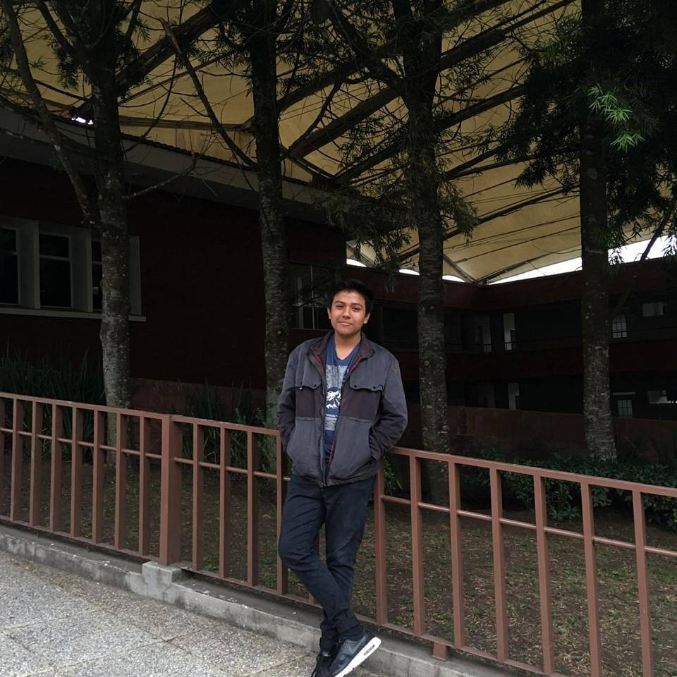

Soy un chico de 17 años de edad, me gustan muchos los videojuegos y la edición de videos, actualmente estudio la carrera de Perito en Administración de Empresas en el colegio Instituto Profesional de Computación, ubicado en la ciudad de Villa Nueva en el departamento de Guatemala. Vivo en el país de Guatemala. Actualmente resido en la colonia Santa Isabel 1, vivo con mis 2 padres y 2 hermanos, soy el hijo menor, mis hermanos se llaman Herberth e Ivan Alexander Gramajo Arevalo.
 Color de Ojos: Café